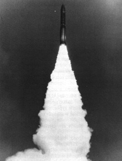

Go to AIRS page
Last updated 7 October 1997
The Minuteman III was the world's first MIRV'ed ICBM. A MIRV (multiple independent re-entry vehicles) permits each missile to carry multiple warheads, and direct each one at a separate target. The Minuteman III is currently expected to remain in service until the year 2020, a full 50 years after its initial deployment and 65 years from the inception of the Minuteman program (few of the people who worked on the program's early phases will still be alive when it retires). After 2004, when the Peacekeeper missile is expected to retire under the terms of the START II treaty, it will be the sole ICBM deployed by the United States.

| Specifications and Performance | |
|---|---|
| Weight | 78,000 lbs (35,400 kg) |
| Length | 59 ft 9.5 in (18.22 m) |
| Diameter (1st stage) | 66 in (1.68 m) |
| Diameter (2nd stage) | 52 in (1.32 m) |
| Diameter (3rd stage) | 52 in (1.32 m) |
| Range | Mk-12 RV: 8080 mi. (13,000 km) Mk-12a RV: 7020 mi. (11,300 km) |
| Speed | 15,000 miles/hour (24,000 km/hr; 6.7 km/sec) |
| Ceiling | About 700 miles (1,130 km) |
| Throw Weight | 2540 lb (1150 kg) |
| Accuracy (CEP) | Mk-12 RV: 900 ft (280 m) Mk-12a RV: 730 ft (220 m); to be increased to 360 ft (110 m) |
| Propulsion | |
|---|---|
| First Stage | 210,000 lb (933,000 KN) thrust Thiokol M-55e solid fuel motor |
| Second Stage | 60,300 lb (268,000 KN) thrust Aerojet General solid fuel motor |
| Third Stage | 34,400 lb (153,000 KN) thrust Thiokol 73-AJ-1 solid fuel motor |
| Post-Boost Stage | 315 lb (1400 KN) thrust Rocketdyne RS-14 restartable liquid fuel motor, fueled with monomethylhydrazine and nitrogen tetroxide (1:1.6 ratio) |
Improved NS-20 (INS-20) gimballed inertial guidance system manufactured by Autonetics Division, Rockwell International. The bus, or post-boost vehicle, is maneuverd by six opitch and yam motors, and four smaller roll motors. Current plans are to retrofit the existing force with the gimballess AIRS (advanced inertial reference sphere) developed for the Peacekeeper (MX) missile. This will increase accuracy to 330ft (100 m), comparable to the Peacekeeper.
Current deployment (for 1998):
300 with three 335 Kt W-78/Mk-12a warhead/re-entry vehicles each;
200 with three 170 Kt W-62/Mk-12 warhead/re-entry vehicles each.
Each missile alos carries a pentration aid package which includes chaff and decoys.
Under START-II (if it is implemented) the current three warhead MIRV loading will be changed to a single 300 Kt W-87/Mk-21 each (taken from the to-be-retired Peachekeeper force).
Underground 25+ meter deep hardened silo with shock isolated floor, debris collection system, and EMP protection. Blast hardening to 2000 psi.
Launch control centers (LCCs) have been upgraded with REACT (Rapid Execution and Combat Targeting) consoles. Prior to this upgrade the Command Data Buffer required 25 minutes to retarget a single Minuteman, and 10 hours for the entire force. The Minuteman can also be launched by the Airborne Launch Control Center.
With the completed retirement of the Minuteman II force, the remaining Minuteman missiles are being consolidated at three bases. Missiles are being removed from Garnd Forks AFB, and by late 1998 the final deployment will be:
The Minuteman-III is a direct descendant of the world's first solid-fuel ICBM. Design studies of such a weapon began in the mid-fifties and actual development of the Minuteman was underway by the summer of 1957. The program was first announced publicly 27 February 1958. The first version of the Minuteman to be deployed was the Minuteman Ia, which achieved IOC (initial operating capability) in December 1962 (20 missiles) and a full squadron on alert on 28 February 1963. A modestly improved version of this missile, the Minuteman Ib, was in service by 30 September 1963. The Minuteman I was originally planned for mobile basing which imposed serious limitations on its performance. As a result, larger follow-on versions were soon under development.
The Minuteman II had an improved second stage, a dramatically improved guidance system (CEP was only one-fifth that of Minuteman I), and was equipped with micro-electronic circuitry, rather than discrete electronic components. This was the first missile to make use of microelectronics which, along with the new very high precision guidance system, led to reliability problems that plagued its initial introduction. First launched on 24 September 1964, it achieved IOC on 31 October 1965 at Grand Forks AFB. The 1000th (and last) Minuteman silo was completed (Malmstrom AFB) on 21 April 1967, and the last missile was deployed 2 July 1969 (replacing a Minuteman I that was being retired).
The idea of providing post-boost guidance and propulsion so that multiple targets could be engaged by a single missile emerged in a number of quarters in the early 1960s. In 1964 North American Rockwell Autonetics and Rocketdyne began a joint venture to develop such a system for Minuteman, which became the basis of the Minuteman III, which went into regular development in 1966. The Minuteman III had an enlarged third stage, and an entirely new warhead section called the bus. The bus houses the guidance system, has its own liquid fueled rocket motor, and mounts three warhead/re-entry vehicles. The three 170 Kt W-62 warheads represented less than half of the gross explosive power over the Minuteman II's single 1.2 megaton W-56, but as measured in equivalent megatonnage (which adjusts for the area damage two-thirds power scaling law) they provide 82% as much destructive power. Since most targets do not require the power of a 1 megaton blast, the multiple warheads permitted attacking many more targets, effectively multiplying the destructive power of the Minuteman missile even with reduced yield.
The first Minuteman III flight took place on 16 August 1968. The first operational missile was emplaced in its silo on 17 April 1970 at Minot AFB, with the first squadron becoming operational on 29 December 1970. As Minuteman III missile were deployed, the last Minuteman I missiles were removed from service (the last Minuteman Ib leaving service on 27 September 1974). Deployment of the Minuteman III was completed on 11 July 1976 with the 550th being emplaced at Malmstrom AFB. Production of the Minuteman ended with the completion of the last missile on 14 January 1977.
Even before Minuteman III deployment had been completed, plans were afoot to enhance its capability to attack hardened targets, especially missile silos. This was achieved by hardware and software upgrades to the inertial guidance system (making it the INS-20, and by replacing the W-62/Mk-12 warhead/RV combination with the W-78/M-12a. The W-78/Mk-12a had both twice the explosive power of the W-62 (335 Kt) and greater accuracy also. In terms of equivalent megatons the three W-78s provided 128% of the destructive power of the W-56. The INS-20 upgrade was tested in July 1976, and it achieved IOC in July 1979. The W-78 development began in July 1974, with the first production units being built in August 1979, and continued through October 1982.
The W-78/Mk-12a deployment came at a price in missile performance. The new warhead/RV combination weighed 16 kg more than the W-62/Mk-12 and reduced the missiles range significantly. This reduction put parts of the southern Soviet Union, including some missile fields, out of range. For this reason, 200 missiles were kept in service with W-62 warhead loadings.
Since the end of the Cold War, and the negotiation of the START II treaty, significant revision has been made in Minuteman III deployment plans. It has been decided to reduce the number of deployed Minuteman IIIs by 50 (to 500) and, since the Minuteman II has now been completely retired, the remaining missiles are being consolidated at three bases instead of four. Under START II the Minuteman III must be downloaded to one warhead each (de-MIRVing it), and the Peacekeeper (MX) missile must be retired (by 2004). Current plans are to switch the 500 W-87/Mk-21 warhead/RVs now deployed on the Peacekeeper to the Minuteman. The W-87 represents a slight reduction in explosive power compared to the W-78 (300 Kt vs 335 Kt), and is heavier, but has more modern safety features, and is more accurate. It can also be upgraded (in principle) to 475 Kt (it is also about 6 years newer). Since the missile will be carrying only a single warhead, the range limitation issue will disappear.
Between 1998 and 2002, 652 new guidance units (the Peacekeeper's AIRS - Advanced Inertial Reference Sphere) will be purchased and fitted to the existing Minuteman III, giving it accuracy equal to the current Peacekeeper force.
To extend the life of the Minuteman III missile force to 2020, 200 retired Minuteman II missiles are being modified to Minuteman III configuration to provide additional missiles for spares and testing (a number of test missiles are fired each year to ensure reliability). The aging solid fuel first and second stages will also be "repoured" using state-of-the-art propellant and bonding technology, the third stages will be remanufactured. These Minuteman force upgrades and life extension will cost more than $5 billion.
The cost of procuring a Minuteman missile (the "flyaway" cost) was $4.84 million (FY 77) or $7.88 million if other program costs are pro-rated ($2.63 million per deployed warhead, not counting the actual warhead cost).